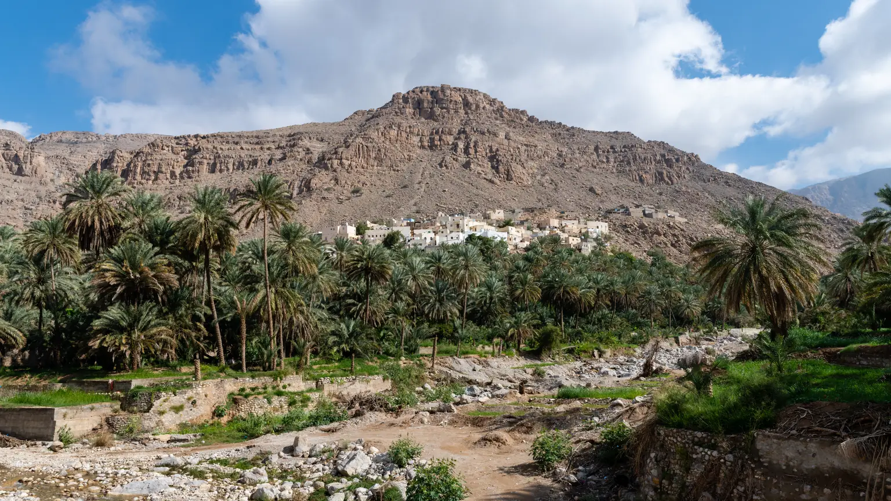

قاعة السيرة
سيرة الشيخ
عامر الشعيبي
من قرية حلفا بوادي بني خالد إلى كشكاش بشرق أفريقيا، جمع الشيخ عامر بن سليمان بن خلفان الشعيبي بين الفقه والقضاء والشعر الشعبي العُماني.
استمع إلى السيرة
رواية عربية بصوت Charon
نص التسجيل
من قرية حلفا بوادي بني خالد إلى كشكاش بشرق أفريقيا، جمع الشيخ عامر بن سليمان بن خلفان الشعيبي بين الفقه والقضاء والشعر الشعبي العُماني.
وُلد في قرية حلفا، بوادي بني خالد، وتلقى علومه الأولى في محيطه العُماني. تقع حلفا في محافظة شمال الشرقية بسلطنة عُمان.
تلقى العلم على يد الشيخ عبد الله بن سعيد بن عيسى السَمَي، واشتغل بالعلوم الشرعية واللغة العربية.
تولى القضاء في كشكاش من أعمال ويتة خلال عهد السلطان حمد بن ثويني، واتصل بأوساط علمية وقضائية.
توفي في شرق أفريقيا، وبقيت قصائده وأجوبته الفقهية حاضرة في الذاكرة والدراسات اللاحقة.
صدر «ديوان الشيخ عامر بن سليمان الشعيبي» عن وزارة التراث والثقافة بمسقط، بتحقيق وتصحيح محمد بن حمد المسروري، في ١٧٢ صفحة.

محطات السيرة
اختَر محطة لقراءة ما ورد عنها في سيرة «المطوّع».
١٨٤٤ مالبدايات في حلفا
وُلد في قرية حلفا، بوادي بني خالد، وتلقى علومه الأولى في محيطه العُماني. تقع حلفا في محافظة شمال الشرقية بسلطنة عُمان.
استكشف وادي بني خالدمرحلة طلب العلمالفقه واللغة
تلقى العلم على يد الشيخ عبد الله بن سعيد بن عيسى السَمَي، واشتغل بالعلوم الشرعية واللغة العربية.
العهد الزنجباريالقضاء في شرق أفريقيا
تولى القضاء في كشكاش من أعمال ويتة خلال عهد السلطان حمد بن ثويني، واتصل بأوساط علمية وقضائية.
اقرأ عن القضاء والفقه١٩٠٨ مالوفاة وبقاء الأثر
توفي في شرق أفريقيا، وبقيت قصائده وأجوبته الفقهية حاضرة في الذاكرة والدراسات اللاحقة.
اقرأ من شعره٢٠٠٩ مصدور الديوان المحقق
صدر «ديوان الشيخ عامر بن سليمان الشعيبي» عن وزارة التراث والثقافة بمسقط، بتحقيق وتصحيح محمد بن حمد المسروري، في ١٧٢ صفحة.
تصفّح الأرشيف